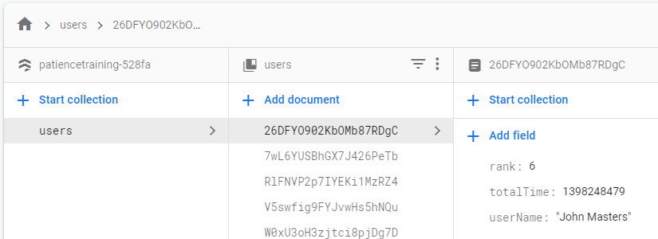

Projects
Grenade Jumper 2019
This is the 3D re-imagining of the earlier Grenade Jumper game, built in Unity for the first semester 3D Games module in UoS. The game features physics based motion and traversal, as well as post-processing, animation and screen-space UIs.
Grenade Jumper Java 2018
This is a game I decided to build to improve my skills with making my own game/physics engine in Java. The game uses JavaFX to draw the graphics. The physics engine includes terrain with destructable properties as well as polygon collision detection with friction and forces. The engine works for the gameplay as well as the level editor built to make level creation easier. Levels are stored as lists of polygon coordinates.
Patience Training 2019

This app was developed for the final assignment in the Android Development course at HvA. The app connects to a Firebase database and uses Firebase for user authenticaton. It uses the Heroku thumbnailer API to retrieve URL thumbnails and loads them with Glide. It uses many different components of the Android platform including dialogs, recycler-views, fragments and notifications. This recieved the first 10/10 grade that the teacher had ever given a student as I had "clearly shown passion and drive in creating this".
Vipeout 2020
This game was developed for the second semester assignment for the VR module at UoS. The game builds upon the Unity skills developed from Grenade Jumper with work done on performance and VR controls. I also used this as an opportunity to learn about other aspects of game design by making all of the assets from scratch using FOSS applications. The sound effects were made using modular synthesis in the program VCV Rack. The two music tracks were made in LMMS. The models were made with Blender. The textures were made with GIMP.
Maze Game 2019
This app was developed as the first semester assignment for the Mobile Development module at UoS. The app is a game that uses the gravity and physics to navigate the player around a maze. Focus was put on multithreading and using sensors in this assignment.